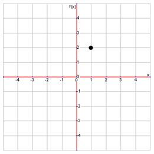
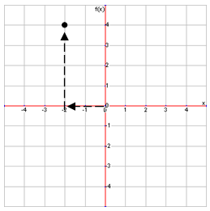
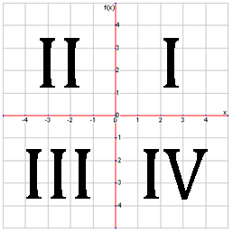
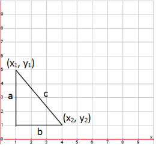
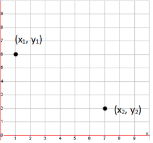

Plotting Points
The x- and y-coordinates of a point can be determined by looking at the numbers just next to the x and y axes. As you can see, our point is right above the 1 on the x-axis and to the right of the 2 on the y-axis, so the x- and y-coordinates are 1 and 2. Usually, the coordinates for a point will be written in the \((\text{x-coordinate}, \text{y-coordinate})\), called an ordered pair. So, our point could be labeled as \((1,2)\). Note that there are also negative numbers on the axes, which means that ordered pairs can also have negative numbers in them. For example, let’s plot the point \((-2,4)\).

To do this, we first look at the ordered pair. Because the x-coordinate is negative, we go 2 spaces to the left from the origin. Because the y-coordinate is positive, we then go 4 spaces up. The arrows on the graph show how we got to our point.
Quadrants
Every graph also consists of four quadrants, labeled quadrant I, II, III, and IV (they are always labeled using these roman numerals), and are divided by the x and y axes. The quadrants are labeled below:

The Distance Formula
A useful thing to be able to do when given two points is find the distance between them. To do this, we must first remember the Pythagorean formula, \(a^2+b^2=c^2\). The graph below shows the line a, b, and c in relation to the 2 points \((1,5)\) and \((4,1)\).

Here, line c is the distance between the two points, and we will solve for it by using the lengths a and b, which we can figure out from the graph. To find a and b, we can easily count the number of spaces each line covers. Line a is 4 units in length and line b is 3. Then, by rearranging the Pythagorean theorem, we come up with the equation \(c= \sqrt{a^2+b^2}\), which we can use to solve for c, which happens to be 5. While this is one way of finding the distance, the distance formula, shown below, is much easier to use:
\[c=\sqrt{(x_1-x_2 )^2+(y_1-y_2 )^2 }\]
To use this formula, label one ordered pair as \((x_1, y_1)\), and the other as \((x_2, y_2)\). It does not matter which one is which. Then just plug the numbers into the formula. Let’s do the problem above again, this time using the distance formula. First we which point is \((x_1, y_1)\) and which point is as \((x_2, y_2)\). We have picked \((1,5)\) to be \((x_1, y_1)\) and \((4,1)\) to be \((x_2, y_2)\). So, the equation would look like:
\[c=\sqrt{(1-4)^2+(5-1)^2 }
\\c= \sqrt{(-3)^2+(4)^2}
\\c=\sqrt{25}
\\c=5\]
As you can see, we get the same answer as before.
The Midpoint Formula
Something else you will need to do when given two points is to find the midpoint, or the middle of the two points. To do this, you need to find the average of the x-coordinates and the average of the y-coordinates using the following formula:
First, we choose which points will be (x1, y1) and (x2, y2), as shown above. Then we put the numbers into the formula like so:
\[\frac{1+7}{2},\frac{6+2}{2}\]
Simplifying this gives us the midpoint of \((4, 4)\).